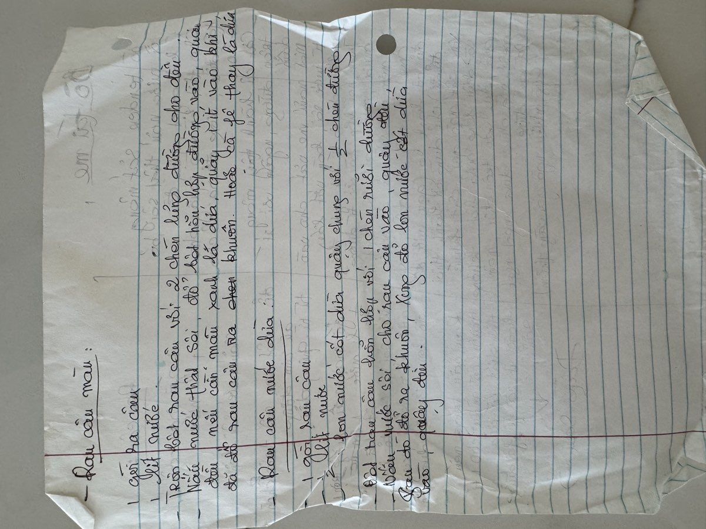
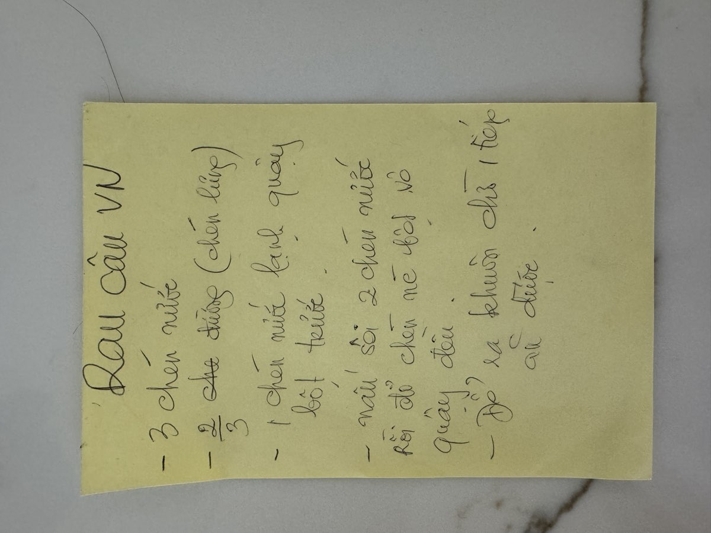

← Back to recipes

Rau Câu
Vietnamese Agar Jelly
From Mẹ — Oanh
Nguyên liệu · Ingredients (Plain)
- 1 packet agar powder (bột rau câu)
- 3 cups water
- ⅔ cup sugar
- Pinch of salt
Lớp nước dừa · Coconut Layer
- 1 can (13.5 oz) coconut milk (nước dừa)
- 1 cup water
- ½ packet agar powder
- ⅓ cup sugar
- Pinch of salt
Lớp màu · Colored Layers (optional)
- Pandan extract for green (lá dứa)
- Strawberry or rose syrup for pink
- Coffee for brown
- Food coloring as desired
Cách làm · Instructions
- In a small bowl, mix the agar powder with cold water to make a slurry. This prevents clumping when you add it to the pot.
- Bring 3 cups of water to a boil in a medium saucepan. Add the agar slurry and sugar. Stir constantly until everything is fully dissolved, about 3–5 minutes. Add a pinch of salt to balance the sweetness.
- For plain rau câu: Pour the hot mixture directly into a mold or glass dish. Let it cool to room temperature, then refrigerate until fully set, about 1–2 hours.
- For layered rau câu: Divide the mixture into portions. Color each portion as desired — pandan for green, a little coffee for brown, syrup for pink. Pour the first layer into the mold and let it set just enough to hold (about 10–15 minutes at room temperature). Then gently pour the next layer on top. Repeat until all layers are done.
- For coconut layer: In a separate pot, combine coconut milk, water, agar powder, and sugar. Bring to a boil, stirring constantly. Pour as one of the layers, alternating with the colored layers for a beautiful striped effect.
- Refrigerate the finished rau câu for at least 2 hours until completely firm. To unmold, run a knife around the edges and flip onto a plate. Cut into squares or diamond shapes to serve.
Công thức gốc · Original handwritten recipe


❦
A recipe from Mẹ's kitchen